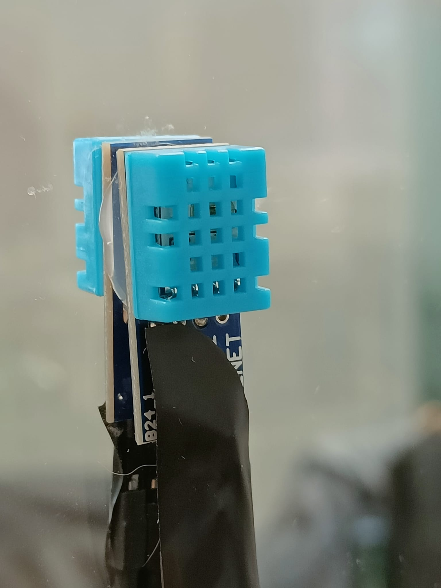

This is a documentation of the exercises I did for the course 'Interaction Design' at university. Students were tasked to experiment with different inputs and outputs in order to learn about the nature of designing interactive experiences.
The documentation aims to explain the different iterations each artifact went through. In order to keep things interesting to read through, I decided to deliver the documentation as a website thus giving me the possibility to design even more interactions - at least theoretically. In practice, I don't have much experience with building websites let alone setting up a single-page-application (SPA) this tries to be. Therefore, the delivery in itself was also a learning experience and the code behind some interactions and effects is heavily inspired by others, that I tried to (give) credit as much as possible.
As for my learning of Vue.js - the framework behind the SPA - credits go to this tutorial.